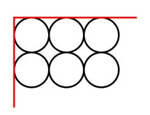

Aufgabe 83 100 Holzstämme sind, wie dargestellt, in 10 Reihen zu je 10 Stämmen gestapelt. Die Stämme sind 10 cm im Durchmesser und 1 m lang. Wie viel Holz und Luft enthält der Stapel? Wie schwer ist der Stapel, wenn er aus Buche mit einer Dichte von 0,7 g/cm³ besteht?  Der Stapel ist = 10 * 10 cm = 100 cm = 1 m lang und 10 * 10 cm = 100 cm = 1 m hoch Volumen des Stapels (rot) einschließlich der Luft = = 1 m * 1 m * 1 m = 1 m³ VHolz = 100 * r² * п * h r = d/2 = 10 cm/2 = 5 cm VHolz = 100 * 5² cm² * п * 100 cm = 785 000 cm³ = 0,785 m³ VLuft = 1 m³ - VHolz = 1 m³ - 0,0785 m³ = 0,215 m³ Holzmasse m: m = VHolz * ρ = 785 000 cm³ * 0,7 g/cm³ = 549 500 g = 549,5 kg